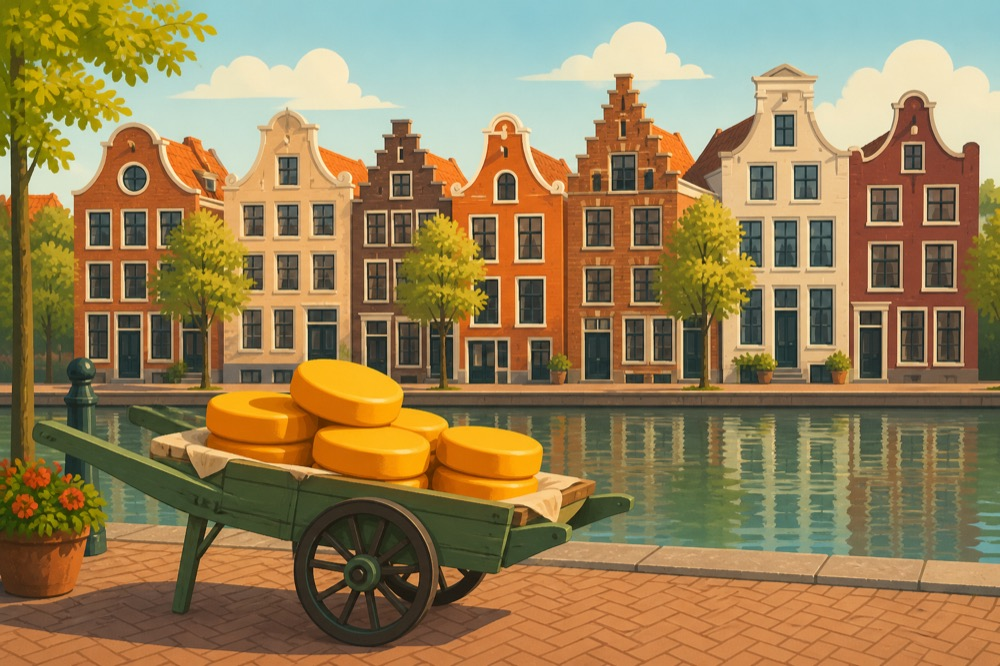
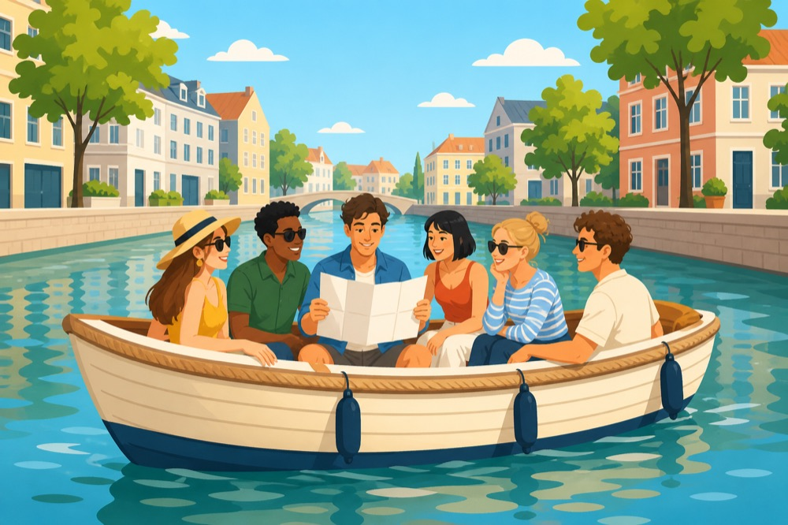

🚨 Vrijwillige Brandweer Opmeer presenteert 🚨
Het jaarlijkse korpsuitje — dit keer géén oefening.
Voor één dag verruilen we de brandslang voor de fiets, de kazerne voor de kroeg, en het meldkamerpiepje voor... nou ja, hopelijk niks. Op zaterdag 12 september trekken we er met het hele korps op uit voor een dag vol fietsen, varen en gezelligheid. Hieronder vind je het volledige spoorboekje van de dag.
Status: onderweg. Volg de tijdlijn hieronder voor de volledige inzet van de dag.
Pak je fiets en meld je bij de kazerne. Geen sirene nodig, gewoon op tijd komen.
Eerst brandstof, dan pas het echte werk. Bak koffie en iets zoets erbij.
Rustig aan trappen, we hebben de hele dag nog voor de boeg.

Fietsen op slot (zie hieronder!) en instappen richting de kaasstad.
Een klein blokje wandelen als warming-up voor het varen.

Het hoofdevenement: 2,5 uur varen door Alkmaar, met een puzzeltocht om onderweg de hersenen aan het werk te zetten. Geen paniek, reddingsvesten zijn niet verplicht.
Benen strekken na het zitten in de boot.
Weer terug richting de fietsen.
Laatste fietstocht van de dag, richting De Weere voor een welverdiend hapje en drankje. Missie geslaagd.
Verplichte uitrusting voor deze inzet. Check onderstaande checklist voordat je vertrekt.
De fietsen blijven de hele middag achter bij station Obdam. Een slap slotje is vragen om problemen — neem iets stevigs mee.
Check vooraf de voorspelling. Bij twijfel: regenkleding mee. Wij blussen liever branden dan dat we zelf drijfnat worden.
Allergieën, vegetarisch of andere wensen? Geef dit direct door bij je aanmelding, dan zit het snor bij de horeca.
Nog niet aangemeld? Laat het zo snel mogelijk weten, zodat we de boten en de horeca definitief kunnen boeken. 🚤🍔